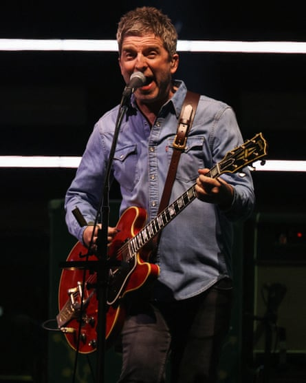

T he noise from the audience when Oasis arrive on stage for their first reunion gig is deafening. You might have expected a loud response. This is, after all, a crowd so partisan that, in between the support acts, they cheer the promotional videos – the tour’s accompanying brand deals seem to involve not just the obviously Oasis-adjacent sportswear brand Adidas, but the more imponderable Land Rover Defender.
Even so, the noise the fans make as the reconstituted Oasis launch into Hello takes you aback slightly, and not just because Hello is a fairly bold choice of opener: this is, after all, a song that borrows heavily from Hello, Hello, I’m Back Again by Gary Glitter. But no one in Cardiff’s Principality Stadium seems to care about the song’s genesis: the noise is such that you struggle to think of another artist that’s received such a vociferous reception.
So, the success of the show seems more or less like a foregone conclusion. Anyone who saw them in the 00s will tell you that the old Oasis were a hugely variable proposition live: you never knew what mood Liam Gallagher would show up in, or how the current state of familial relations might affect their performance. But evidently as little as possible has been left to chance at these reunion gigs. No one – including, to their immense credit, Liam and Noel Gallagher – seems interested in pretending this tour is anything other than a hugely lucrative cash-grab, and clearly, you only grab the maximum possible cash if the tour doesn’t descend into the kind of bedlam to which Oasis tours were once prone.
Liam is on his best behaviour – “thanks for putting up with us,” he offers at one juncture, “I know we’re hard work”, a noticeable shift from the days when he was wont to rain abuse on the audience – and Liam and Noel have rhythm guitarist Paul “Bonehead” Arthurs stood squarely between them on stage, creating distance. You could say that removes combustibility, the hint of potential chaos that was at least part of Oasis’s appeal, but you might as well save your breath: no one would be able to hear you over the sound of people singing along en masse to a set that plays to the strengths of Oasis’s back catalogue.
Abundant songwriting talent … Noel Gallagher at the Principality Stadium.Photograph: Suzanne Plunkett/Reuters
Few bands’ reputations have been better served by the rise of streaming, both in its favouring of curated playlists over albums – all the highlights and none of the rubbish, of which there was a great deal in Oasis’s later years – and in the way it decontextualises music, denuding it of its accompanying story or contemporary critical responses. The much-vaunted Oasis fans too young to remember the band first-hand definitely exist – you can see them in the audience – but you do wonder how many of them believe Oasis split up in 1998, rather than grimly trudging on for another decade, to declining artistic returns.
The show seeks to maintain this myth. It’s very much playlist Oasis, big on the first two albums and B-sides from the years when Noel Gallagher’s songwriting talent seemed so abundant he could afford to blithely confine stuff as good as Acquiesce or The Masterplan to an extra track on a CD single, and low on anything at all from their later years. Only the presence of 2002’s Little By Little indicates that Oasis existed into the 21st century.
You can still sense inspiration declining – 1997’s D’You Know What I Mean? sounds like a trudge regardless of how many people are singing along – but far more often, the show serves as a reminder of how fantastic purple patch Oasis were. Against a ferocious wall of distorted guitars, there’s a weird disconnect between the tone of Noel’s songs – wistful, noticeably melancholy – and the way Liam sings them like a man seething with frustration, on the verge of offering someone a fight. Even discounting half their career, they have classics in abundance: Cigarettes & Alcohol, Slide Away, Rock ’n’ Roll Star, Morning Glory. Enough, in fact, that a section where Liam cedes the stage and Noel takes over vocals doesn’t occasion a dip in the audience’s enthusiasm: during Half the World Away, the audience’s vocals threaten to drown the song’s author out entirely.
It ends with precisely the encore you might have expected – Don’t Look Back in Anger, Wonderwall and Champagne Supernova – which understandably occasions precisely the response you might have expected. A very perfunctory clap on the back – the only time the Gallaghers interact beyond playing the same songs – and Liam vanishes: a car is waiting by the side of the stage to whisk him away before the final notes die away, a triumph in the bag.